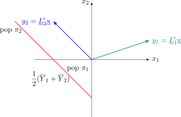

4.5 How Many Components to Keep
There is no test that settles this, and the honest answer is that it is a judgement informed by several partial criteria.
- (i)
- Cumulative proportion. Retain enough components to reach a stated proportion of the total variation, commonly \(0.8\) or \(0.9\).
- (ii)
- The scree plot. Plot \(\widehat {\lambda }_i\) against \(i\) and look for the elbow beyond which the eigenvalues fall away slowly and evenly; retain the components above it.
- (iii)
- Kaiser’s rule. Working from the correlation matrix, retain components with \(\widehat {\lambda }_i>1\), on the ground that a component explaining less than one variable’s worth of variance has not earned its place.
- (iv)
- Interpretability. A component that cannot be described in the language of the subject is of limited use however much variance it carries.

Note 4.10. Principal components are a description of the data, not a model of them. No distributional assumption has been used anywhere in this section — only that \(\Sigma \) exists — so there is no likelihood, no standard error and no test attached to any of it. Multivariate normality becomes relevant only when inference about the \(\lambda _i\) is wanted, and Section 5 is where that assumption enters.
A second caution. The components are chosen to maximise variance, and variance is not the same as importance. A direction along which the data barely vary may nonetheless be the one that separates two groups, in which case the leading components will conceal exactly the structure being sought. That is a job for the discriminant analysis of Section 6, which maximises separation rather than variance, and the distinction between the two is worth keeping firmly in view.
Questions on this section
Stuck on something here? Ask below and it stays attached to this topic.